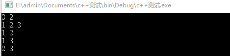

从n个数里面选择m个数
#include<iostream> #include<vector> using namespace std; vector<int> s; void dfs(int a[],int n,int m,int index,int nowk) { if(nowk==m){//当我挑选的数已经够得时候，就把它输出。 for(int i=0;i<2;i++){ cout << s[i] << ' '; } cout << endl; return ; } if(index<n){ s.push_back(a[index]); dfs(a,n,m,index+1,nowk+1); s.pop_back(); dfs(a,n,m,index+1,nowk); } } int main() { int n,m; cin >> n >> m;//n个数我要选择m个数，选出来的数是没有顺序的 int a[n]; for(int i=0;i<n;i++){ cin >> a[i]; } dfs(a,n,m,0,0); return 0; }
这个代码是从n个数里选择m个数，是组合数。我举个例子吧。假如我想从从3个数里选择2个数，这3个数分别是{1，2，3}，那么我选择的结果就有三种，分别是{1，2}，{1，3}，{2，3}，这个程序就能够实现这样的功能。
